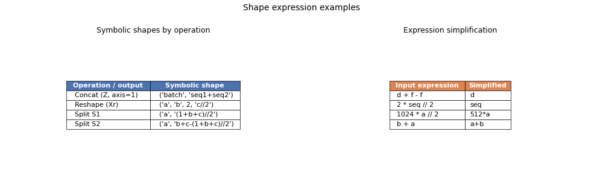

Note
Go to the end to download the full example code.
Expressions in Shape Computation¶
When an ONNX model contains dynamic (unknown) input dimensions,
BasicShapeBuilder
represents every output dimension as either a plain integer or a symbolic
string expression built from the names of the input dimensions.
This example walks through several common patterns:
Concat — adds dimension names to produce
"seq1+seq2"Reshape with -1 — uses floor-division to produce
"c//2"Split — introduces ceiling-division via
CeilToInt(…)Automatic simplification —
d + f - f→d,2*x//2→xEvaluation — resolving symbolic shapes to concrete integers once the actual dimension values are known
How it works¶
BasicShapeBuilder
walks every node of the ONNX graph in order. For each node it calls an
op-specific handler (defined in yobx.xshape.shape_type_compute) that
derives the output shape from the input shapes. When a dimension cannot be
expressed as a plain integer it is stored as a Python-arithmetic string
(e.g. "seq1+seq2", "c//2"). Before storing, the string is
normalised by
simplify_expression,
which uses Python’s ast module to cancel identical sub-expressions
(d + f - f → d) and fold constants (2 * seq // 2 → seq).
Once the actual input sizes are available at runtime, every symbolic
dimension can be resolved to an integer by
evaluate_expression
or the higher-level
evaluate_shape.
For a deeper description of the design, see the ShapeBuilder design page.
See also¶
yobx.xshape.BasicShapeBuilder— main implementationyobx.xshape.simplify_expressions.simplify_expression()— expression canonicalisationyobx.xshape.evaluate_expressions.evaluate_expression()— expression evaluationyobx.xshape.shape_type_compute— per-operator shape handlers
Concat: summing two dynamic dimensions¶
When two tensors are concatenated along a dynamic axis, the output
dimension is the sum of the two input dimensions. Because both
seq1 and seq2 are unknown at graph-construction time, the result
is the symbolic expression "seq1+seq2".
import onnx
import numpy as np
import onnx.helper as oh
import onnx.numpy_helper as onh
from yobx.xshape import BasicShapeBuilder
from yobx.xshape.simplify_expressions import simplify_expression
TFLOAT = onnx.TensorProto.FLOAT
model = oh.make_model(
oh.make_graph(
[oh.make_node("Concat", ["X", "Y"], ["Z"], axis=1)],
"concat_graph",
[
oh.make_tensor_value_info("X", TFLOAT, ["batch", "seq1"]),
oh.make_tensor_value_info("Y", TFLOAT, ["batch", "seq2"]),
],
[oh.make_tensor_value_info("Z", TFLOAT, [None, None])],
),
opset_imports=[oh.make_opsetid("", 18)],
ir_version=10,
)
builder = BasicShapeBuilder()
builder.run_model(model)
print("shape of X :", builder.get_shape("X"))
print("shape of Y :", builder.get_shape("Y"))
print("shape of Z :", builder.get_shape("Z")) # ('batch', 'seq1+seq2')
shape of X : ('batch', 'seq1')
shape of Y : ('batch', 'seq2')
shape of Z : ('batch', 'seq1+seq2')
Evaluating symbolic shapes with concrete values¶
Once we know the actual sizes of the input dimensions we can resolve
every symbolic dimension to an integer with evaluate_shape.
concrete shape of Z: (2, 12)
Reshape: floor-division expressions¶
A Reshape node that halves a dynamic dimension produces the
symbolic expression "c//2". The -1 sentinel in the target
shape is resolved to the appropriate quotient expression.
model_reshape = oh.make_model(
oh.make_graph(
[
oh.make_node("Reshape", ["X", "shape"], ["Xr"]),
],
"reshape_graph",
[oh.make_tensor_value_info("X", TFLOAT, ["a", "b", "c"])],
[oh.make_tensor_value_info("Xr", TFLOAT, [None, None, None, None])],
[onh.from_array(np.array([0, 0, 2, -1], dtype=np.int64), name="shape")],
),
opset_imports=[oh.make_opsetid("", 18)],
ir_version=10,
)
builder_reshape = BasicShapeBuilder()
builder_reshape.run_model(model_reshape)
print("shape of X :", builder_reshape.get_shape("X"))
print("shape of Xr :", builder_reshape.get_shape("Xr")) # ('a', 'b', 2, 'c//2')
shape of X : ('a', 'b', 'c')
shape of Xr : ('a', 'b', 2, 'c//2')
Split: ceiling-division expressions¶
Split with num_outputs=2 and no explicit split attribute
divides the axis dimension as evenly as possible. When the dimension is
odd the two halves differ by one, which is captured by the expression
CeilToInt(b+c, 2) for the first output and
b+c - CeilToInt(b+c, 2) for the second.
model_split = oh.make_model(
oh.make_graph(
[
oh.make_node("Concat", ["X", "Y"], ["xy"], axis=1),
oh.make_node("Split", ["xy"], ["S1", "S2"], axis=1, num_outputs=2),
],
"split_graph",
[
oh.make_tensor_value_info("X", TFLOAT, ["a", "b"]),
oh.make_tensor_value_info("Y", TFLOAT, ["a", "c"]),
],
[
oh.make_tensor_value_info("S1", TFLOAT, [None, None]),
oh.make_tensor_value_info("S2", TFLOAT, [None, None]),
],
),
opset_imports=[oh.make_opsetid("", 18)],
ir_version=10,
)
builder_split = BasicShapeBuilder()
builder_split.run_model(model_split)
print("shape of xy :", builder_split.get_shape("xy"))
print("shape of S1 :", builder_split.get_shape("S1"))
print("shape of S2 :", builder_split.get_shape("S2"))
context_split = dict(a=3, b=4, c=6)
print("concrete shape of S1:", builder_split.evaluate_shape("S1", context_split))
print("concrete shape of S2:", builder_split.evaluate_shape("S2", context_split))
shape of xy : ('a', 'b+c')
shape of S1 : ('a', 'CeilToInt(b+c,2)')
shape of S2 : ('a', 'b+c-CeilToInt(b+c,2)')
concrete shape of S1: (3, 5)
concrete shape of S2: (3, 5)
Automatic expression simplification¶
Before storing a symbolic dimension,
simplify_expression
reduces the expression to its simplest equivalent form.
simplify('d + f - f' ) = 'd'
simplify('2 * seq // 2' ) = 'seq'
simplify('1024 * a // 2' ) = '512*a'
simplify('b + a' ) = 'a+b'
Plot: symbolic shape expressions summary¶
The table below collects all of the symbolic shape expressions computed in this example and their simplified forms side-by-side.
import matplotlib.pyplot as plt # noqa: E402
rows = [
["Concat (Z, axis=1)", "('batch', 'seq1+seq2')"],
["Reshape (Xr)", "('a', 'b', 2, 'c//2')"],
["Split S1", "('a', 'CeilToInt(b+c,2)')"],
["Split S2", "('a', 'b+c-CeilToInt(b+c,2)')"],
]
simplify_rows = [[expr, simplify_expression(expr)] for expr in examples]
fig, axes = plt.subplots(1, 2, figsize=(10, 3))
# Left table: symbolic shapes per operation
ax = axes[0]
ax.axis("off")
tbl = ax.table(
cellText=rows,
colLabels=["Operation / output", "Symbolic shape"],
loc="center",
cellLoc="left",
)
tbl.auto_set_font_size(False)
tbl.set_fontsize(8)
tbl.auto_set_column_width([0, 1])
for col in range(2):
tbl[0, col].set_facecolor("#4c72b0")
tbl[0, col].set_text_props(color="white", fontweight="bold")
ax.set_title("Symbolic shapes by operation", fontsize=9, pad=6)
# Right table: simplification examples
ax2 = axes[1]
ax2.axis("off")
tbl2 = ax2.table(
cellText=simplify_rows,
colLabels=["Input expression", "Simplified"],
loc="center",
cellLoc="left",
)
tbl2.auto_set_font_size(False)
tbl2.set_fontsize(8)
tbl2.auto_set_column_width([0, 1])
for col in range(2):
tbl2[0, col].set_facecolor("#dd8452")
tbl2[0, col].set_text_props(color="white", fontweight="bold")
ax2.set_title("Expression simplification", fontsize=9, pad=6)
plt.suptitle("Shape expression examples", fontsize=10)
plt.tight_layout()
plt.show()

Total running time of the script: (0 minutes 0.136 seconds)
Related examples


MiniOnnxBuilder: serialize tensors to an ONNX model